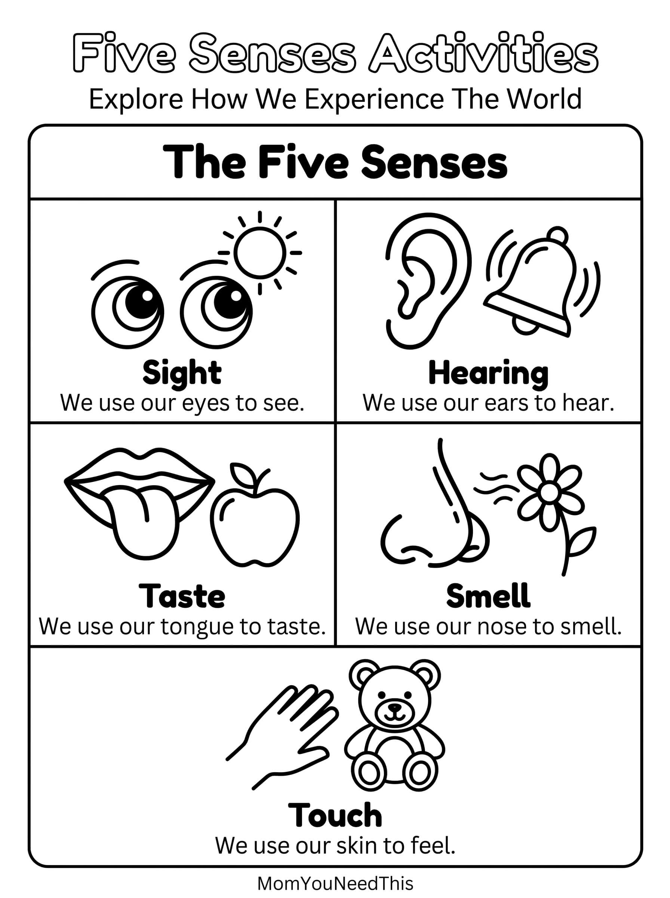

Five Senses Coloring Pages Free Printable Five Senses Coloring Pages For Kids
Help toddlers and preschoolers discover the five senses with these fun, kid-friendly coloring pages. Children can explore sight, hearing, smell, taste, and touch while building vocabulary and learning about how their bodies experience the world around them.
👀 Explore The Five Senses
Use the coloring pages to help your child learn about seeing, hearing, smelling, tasting, and touching through simple pictures and fun conversations.
Free Five Senses Coloring Pages


How To Use These Coloring Pages
Talk about each sense while your child colors. Ask questions like "What do we use to see?" "What can you hear?" or "What does this feel like?" You can also encourage your child to find examples of each sense around the house or outside.
Why Learn About The Five Senses?
Learning about the five senses helps children understand how their bodies interact with the world around them. It also builds vocabulary, observation skills, and early science knowledge through everyday experiences.
🎁 Keep Exploring Free Learning Activities
Discover more printable activities, toddler resources, and learning ideas created for busy parents.
🎁 View All Free Resources